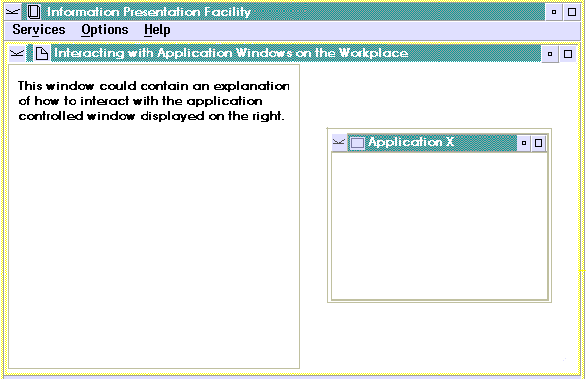

To position windows or graphics within an application-controlled window, the IPF communication object requires a communication object window. For example, an application-controlled window can be used to represent the workplace, with an interactive, simulated application window positioned on the workplace. However, because IPF sizes and positions the application-controlled window after returning from the call to a communication object, the communication object cannot size and position the simulated application window until after it has created the window and returned control to IPF.
The dilemma is resolved because the communication object can receive HM_INFORM messages after :acviewport. has been processed by IPF and the communication object has created an active communication object window. Upon receiving the HM_INFORM message from IPF, the window procedure can then create the simulated application window and position it within the application-controlled window.
The following C-language source code contains the communication object ComWindow that creates a communication window and processes messages from IPF.
#define INCL_WIN
#define INCL_DOS
#include <os2.h>
/* Define ID used with reftype = inform attribute in the link tag */
/* in tagged source for help information */
#define SIMULATE_APPWINDOW 1000
MRESULT EXPENTRY ComWindowProc (HWND hwnd, USHORT msg, MPARAM mp1, MPARAM mp2);
MRESULT EXPENTRY SimWindowProc (HWND hwnd, USHORT msg, MPARAM mp1, MPARAM mp2);
HWND hComWindow = NULL;
HWND hSimWindow = NULL;
HWND hComClientWindow;
HWND hSimClientWindow;
HWND PreviousComWindow;
HWND PreviousHwnd;
USHORT EXPENTRY ComWindow (pACVP, ObjectInfo)
PACVP pACVP;
PCH ObjectInfo;
{
ULONG FrameFlags=0L;
/* Register class for communication window */
WinRegisterClass (pACVP->hAB,
"CLASS_COMM",
(PFNWP)ComWindowProc,
CS_SYNCPAINT | CS_SIZEREDRAW | CS_MOVENOTIFY, 8);
/* Register class for simulated application window */
WinRegisterClass (pACVP->hAB,
"CLASS_APPSIM",
(PFNWP)SimWindowProc,
CS_SYNCPAINT | CS_SIZEREDRAW | CS_MOVENOTIFY, 4);
/* Create the communication window */
hComWindow = WinCreateStdWindow (pACVP->hWndParent,
0L,
&FrameFlags,
(PSZ)"CLASS_COMM",
NULL,
0L,
(HMODULE)NULL,
0L,
(PHWND)&hComClientWindow);
/* Return handle of Communication frame window to IPF */
pACVP->hWndACVP=hComWindow;
/* Send a message to IPF indicating that it should talk to our */
/* communication window */
PreviousComWindow = WinSendMsg (pACVP->hWndParent,
HM_SET_OBJCOM_WINDOW,
(MPARAM)hComWindow,
(MPARAM)hComWindow);
/* Save handle of IPF's communication window in window word of the */
/* communication window */
WinSetWindowULong (hComClientWindow, 0L, (ULONG)PreviousComWindow);
return FALSE;
}
MRESULT EXPENTRY ComWindowProc (HWND hwnd, USHORT msg, MPARAM mp1, MPARAM mp2)
{
HPS hps;
RECTL Rect;
ULONG FrameFlags = FCF_TITLEBAR | FCF_SYSMENU |
FCF_SIZEBORDER | FCF_MINMAX ;
switch (msg)
{
case HM_INFORM:
switch ((USHORT)mp1)
{
case SIMULATE_APPWINDOW:
/* create the application window */
hSimWindow = WinCreateStdWindow (hwnd,
WS_VISIBLE,
&FrameFlags,
(PSZ)"CLASS_APPSIM",
NULL,
0L,
(HMODULE)NULL,
0L,
(PHWND)&hSimClientWindow);
WinSetWindowText (hSimWindow, "Application X");
WinSendMsg (hSimWindow,
WM_SETICON,
WinQuerySysPointer (HWND_DESKTOP, SPTR_APPICON,
FALSE), NULL);
/* get the size of the communication client window */
WinQueryWindowRect (hwnd, &Rect);
/* adjust the size of the application window within the */
/* communication client window */
Rect.xLeft = Rect.xRight / 12;
Rect.yBottom = Rect.yTop / 5;
Rect.xRight = Rect.xLeft * 10;
Rect.yTop = Rect.yBottom * 3;
/* position the application window within the */
/* communication client window */
WinSetWindowPos (hSimWindow, HWND_TOP,
(SHORT)Rect.xLeft,
(SHORT)Rect.yBottom,
(SHORT)Rect.xRight,
(SHORT)Rect.yTop,
(SWP_SHOW | SWP_SIZE |
SWP_MOVE | SWP_ACTIVATE));
return (MRESULT)TRUE;
}
case WM_PAINT:
hps = WinBeginPaint (hwnd, (HPS)NULL, (PRECTL)NULL);
WinQueryWindowRect (hwnd, &Rect);
WinFillRect (hps, &Rect, CLR_RED);
WinEndPaint (hps);
break;
case WM_CLOSE:
WinDestroyWindow (WinQueryWindow (hwnd, QW_PARENT));
return (MRESULT)TRUE;
case WM_DESTROY:
PreviousHwnd = (HWND)WinQueryWindowULong (hwnd, 0L);
WinSendMsg (WinQueryWindow (hwnd, QW_PARENT),
HM_SET_OBJCOM_WINDOW,
PreviousHwnd,
NULL);
break;
}
return (WinDefWindowProc (hwnd, msg, mp1, mp2));
}
/* Create the simulated frame window */
MRESULT EXPENTRY SimWindowProc(HWND hwnd, USHORT msg, MPARAM mp1, MPARAM mp2)
{
HPS hps;
RECTL Rect;
switch (msg)
{
case WM_PAINT:
hps = WinBeginPaint (hwnd, (HPS)NULL, (PRECTL)NULL);
WinQueryWindowRect (hwnd, &Rect);
WinFillRect (hps, &Rect, CLR_WHITE);
WinEndPaint (hps);
break;
case WM_CLOSE:
WinDestroyWindow (WinQueryWindow (hwnd, QW_PARENT));
return (MRESULT)TRUE;
case WM_DESTROY:
PreviousHwnd = (HWND)WinQueryWindowULong (hwnd, 0L);
WinSendMsg (WinQueryWindow (hwnd, QW_PARENT),
HM_SET_OBJCOM_WINDOW,
PreviousHwnd,
NULL);
break;
}
return (WinDefWindowProc (hwnd, msg, mp1, mp2));
}
The following shows the tagging that communicates with the communication object through the reftype=inform attribute of :link.. The contents of the right window are defined by IPF. The contents of the left window are defined and controlled by the communication object ComWindow and resides in INFORM.DLL.
:userdoc.
:docprof ctrlarea=none.
:h1 id=examp5 scroll=none
x=left y=bottom width=100% height=100%.
Interacting with Application Windows on the Workplace
.*
:link reftype=hd refid=mytxt5
vpx=left vpy=bottom vpcx=50% vpcy=100%
titlebar=none scroll=none auto split.
.*
:acviewport dll='inform'
objectname='ComWindow'
objectid=1
objectinfo='optional'
vpx=right vpy=bottom
vpcx=50% vpcy=100%.
.*
.*
:link reftype=inform res=1000 auto.
:h1 hide id=mytxt5.My text
:p.
This window could contain an explanation of how to interact with
the application-controlled window displayed on the right.
:euserdoc.
In the previous example, IPF processes :acviewport. as follows:
When the HM_INFORM message is sent to IPF, IPF creates and displays the simulated application window.
The following figure displays the windows from the previous tagging example.

An Application-Controlled Window. The communication object window is a functioning frame window.
Communication windows also are useful when the same communication object is used to support multiple application-controlled windows in help information. For example, you can use the same IPF communication object to represent different simulated application windows from one window to another. Using the previous examples, this is accomplished in two steps.